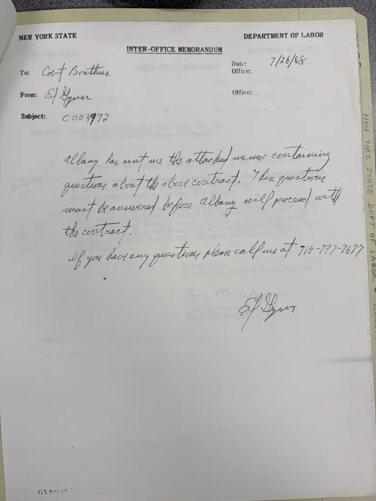
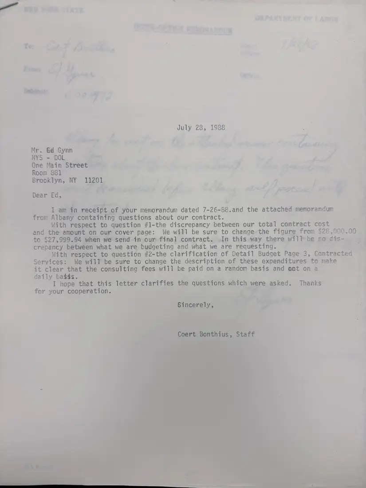

Letter, 2 pages
Correspondence with the Department of Labor on the 1988–89 contract budget
July 26–28, 1988
A handwritten Department of Labor memo from Ed Gynn (July 26, 1988) forwarding Albany's questions about the contract, and Coert Bonthius's reply of July 28, 1988: the cover page will be corrected from $28,000.00 to $27,999.94, and the consultants' fees will be described as paid on a random rather than a daily basis.
Download or cite this itemPages


(open zoom view)This page is handwritten. Machine reading does not work on handwriting, and no one has transcribed it by hand yet.


(open zoom view)Read the page text (machine-read, contains errors)
This text was generated automatically from the photograph and has not been corrected. The image is the authoritative record.
Te: ff, gs , P Nome: |} 3Y ea ee Subimce: oe July 28, 1988 Mr. Gd Gynn = NYS - DOL —_ Poe? Qne Main Street ew ; ee, Room 881 - ae Brooklyn, NY 11201 A ts PP Big sag (¢ 4 : the” pit oa Dear Ed, ee | of fata I aah receipt o f your memorandum dated 7- 26-88. and the attached memorandum . from Albany containing questions about our contract. rs: With respect to question #1-the discrepancy between our tou contract cost and the amount on our cover page: We will be sure to change the figure from $28,000.00 to $27,999.94 wher we send in our final contract. In this way there \ il} be DOMIS~ a § crepancy between what we are budgeting and what we are requesting. | With respect to question #2-the clarification of Detail Budget Page 3, Contracted Services: We will be sure to change the description of these expenditures to make it clear that the consulting fees will be paid on a random basis and ant on a daily bag$s. I hope that this letter clarifies: erie! Guest ane, which we e for your cooperation. . asked . Thanks
See something wrong, or recognize a person or event? Send a correction. If you hold rights in this item or think it should not be public, write to the same address.